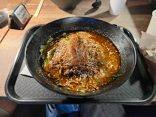

Red White Boneless Ramen - Red Hot Miso Ramen

- Price: $20
- Rating: 6.5/10
- Last date I had it : 2025-06-29
- Review: this is probs the second vegetarian ramen I’ve had. Flavor was not bad, and actually pretty decent. Unfortunately, it’s kinda one dimensional and not surprising. The toppings are interesting but not in a positive way. The fact that it’s vegetarian is nice, but overall there are ways to make it better without using tofu as a meat substitute. It’s kinda pathetic that people still use tofu as a meat substitute bc it’s really more than that. menma, woodear mushrooms, seaweed are more classic, add better texture, and would really suit a miso ramen. tofu is still fine here (given that tofu is often found in miso soup), but I didn’t enjoy the taste of the firm tofu (which is pretty common compared to sofu tofu). Idk why there’s a decent line for this place, 6.5/10.